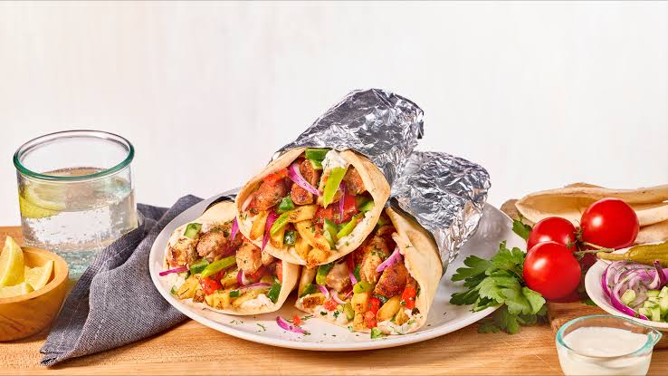

, Shawarma

Shawarma : is a hugely popular Middle Eastern street food dish consisting of meat cut into thin slices,
stacked in a cone-like shape, and roasted on a slowly turning vertical rotisserie or spit
Ingredients
- Chicken:1kg boneless,skinless chicken thighs
- Yogurt:3 tablespoons plain yogurt
- Olive Oil
- Lemon Juice
- Vinegar
- Garlic
- Warm Shawarma Spice Mix:Mix ingredients
Steps
- Prep the meat:Slice the chicken thighs into thin, bite-sized stripsor flat pieces so they cook evenly and catch maximum surface char.
- Marinate: In a large bowl, whisk together the yogurt, olive oil, lemon juice, vinegar, minced garlic, and the entire shawarma spice mix. Toss the chicken strips in the marinade until every piece is completely coated. Cover and refrigerate for at least 1 to 3 hours (overnight yields the deepest flavor).
- Sear the Chicken: Heat a large cast-iron skillet or heavy-bottomed pan over medium-high heat with a tiny splash of oil. Working in batches to avoid overcrowding the pan, lay the chicken pieces flat. Cook undisturbed for 4–5 minutes on the first side to build a dark, crispy, caramelized crust. Flip and cook for another 3–4 minutes until cooked through.
- Rest and shred: Move the cooked chicken to a cutting board and let it rest for 5 minutes to trap the juices, then shred or slice any larger pieces even thinner.
- Assemble:5. arm your flatbread in a dry pan. Spread a generous layer of the garlic sauce down the center. Pile on the warm shredded chicken, followed by the cabbage, fresh tomatoes, red onions, and pickles. Roll the flatbread up tightly.
- Toast (Optional): For a proper street-food finish, place the wrapped shawarma back onto the hot skillet for 1–2 minutes per side until the bread is golden and crispy.
Home